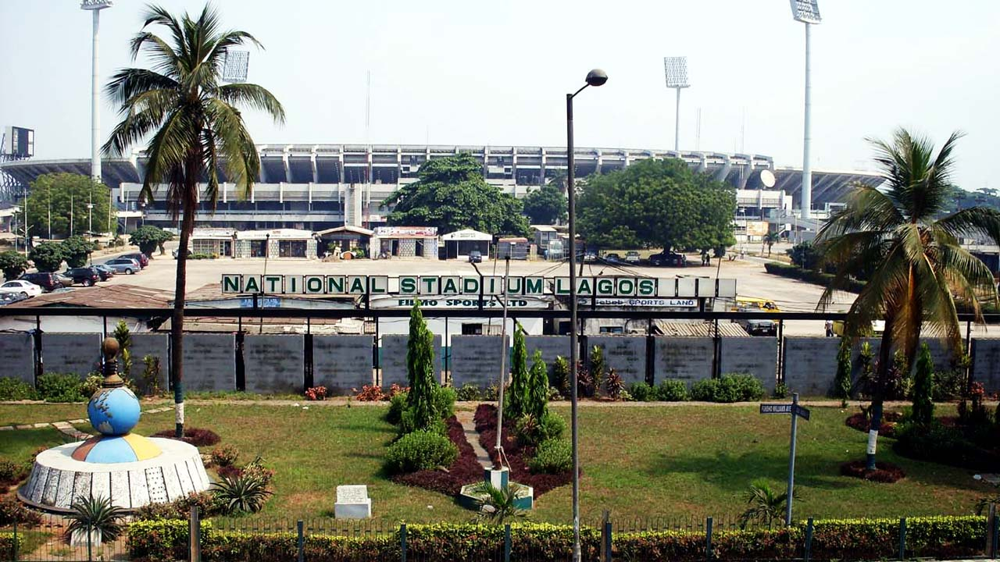
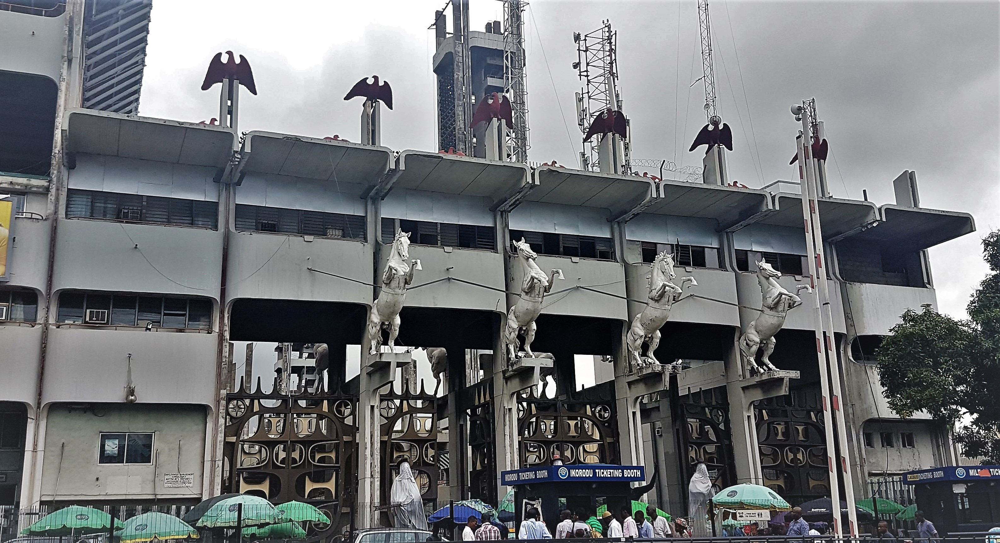

Lagos
Most Famous Landmarks
Introduction
Lagos, the vibrant commercial capital of Nigeria, is a city that
pulsates with energy and a rich cultural tapestry. As one of the
fastest-growing cities in the world, Lagos is known for its dynamic
blend of traditional and modern influences, offering a unique experience
for both residents and visitors. From historical sites that tell the
story of Nigeria's past to contemporary structures that highlight its
rapid development, Lagos boasts numerous landmarks that are both
visually stunning and culturally significant. Here, we explore some of
the most famous landmarks in this bustling metropolis.
- National Theatre
- Ikoyi Link Bridge
- National Stadium
- Tafewa Balewa Square (TBS)
- Tinubu Square
National Theatre

The National Theatre, Nigeria is the primary centre for the performing
arts in Nigeria. The monument is located in Iganmu, Surulere, Lagos. Its
construction was completed in 1976 in preparation for the Festival of
Arts and Culture (FESTAC) in 1977.
More information
Ikoyi Link Bridge

The Lekki-Ikoyi Link Bridge, is a 1.36 km (0.84 mile) cable-stayed
bridge in Lagos State. It links the Phase 1 area of Lekki, with Ikoyi
district of Lagos. The bridge was commissioned on 29 May 2013 by the
Governor of Lagos State, Babatunde Raji Fashola.
National Stadium

National Stadium
The Lagos National Stadium is a multi-purpose stadium in Surulere,
Lagos State, Nigeria, which comprises an Olympic-size swimming arena
and a multipurpose arena used for athletics, rugby union, basketball,
volleyball, table tennis, wrestling and boxing matches. It was used
mostly for football matches until 2004. It hosted several
international competitions including the 1980 African Cup of Nations
final, the 2000 African Cup of Nations final, and FIFA World Cup
qualifying matches. It also served as the main stadium for the 1973
All-Africa Games.
Tafewa Balewa Square

The Tafawa Balewa Square, (TBS) is a 14.5-hectare (35.8-acre) ceremonial
ground (originally called "Race Course") in Lagos Island, Lagos. TBS was
constructed in 1972 over the site of a defunct rack for horse racing. It
is bounded by Awolowo road, Cable Street, Force road, Catholic Mission
street and the 26-storey independence building.
Tinubu Square

Tinubu Square, formerly Independence Square, is an open space landmark
located in Broad Street, Lagos Island, Lagos State, Nigeria named after
the Yoruba slave trader, merchant, and aristocrat Madam Efunroye
Tinubu.[1][2] It was formerly called Ita Tinubu[3][4] before it was
named Independence Square by leaders of the First Nigerian Republic
after Nigerian independence and subsequently Tinubu Square.